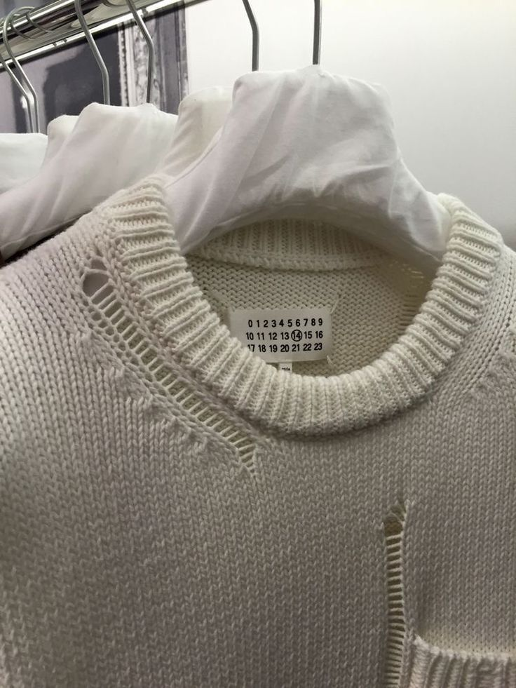
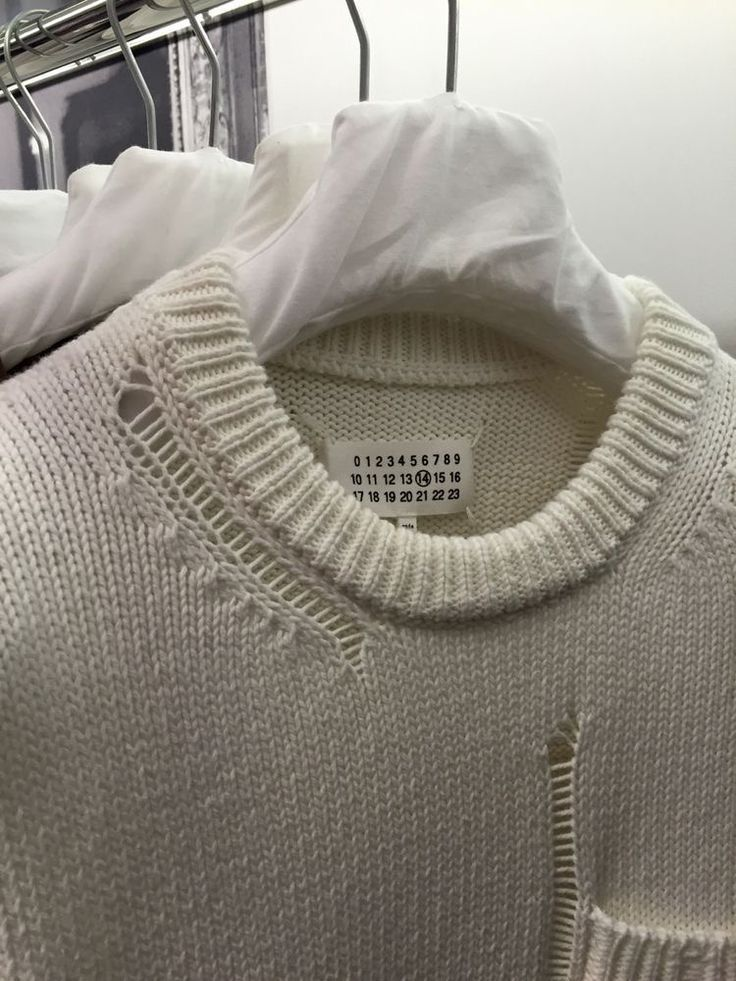

Who is
maison margiela?
The Paris-based house creates womenswear and menswear according to the uniquely unconventional pr ples imag by Martin Margiela himself, a philosophy in which deconstruction and heritage go hand in hand to create designs that showcase fashion as an art of meaning rather than a cult of personality

Head office:
Franch/
Paris
Founders:
Martin margiela/
jenny meirens

Martin Margiela was born
in Genk, Belgium
27/04/
1957
THE MAN
Martin Margiela started his eponymous label in 1988. having previously graduated from Antwerp's Academy of Fine Arts and worked for Jean Paul Gaultier. He is notoriously private, refusing to have his photograph taken and always remaining backstage after shows.
Jenny and Martin met in 1983, when the competition was on the jury of the textile industry Golden Spindle Award, and Martin was a participant in it. The prize was received by Dirk van Sen, a member of the Antwerp Six, but Jenny convinced everyone else to the last that it was Martin Margiela who deserved the victory.
For me, he was the best, I argued a lot about this. His clothes were surgeons robes, his skirts were huge, and his shoes were beautiful-with a strong, masculine top and a low massive heel
JENNY
MEIRENS

THE NUMBERS
The numbers on the garment labels refer to different collections, although not all of them are in use. Of the ones they do use, they reference the following:
Garments remodelled by hands
for men
LINE/0
Garments remodelled by hands
for women
LINE/010
A wardrobe
for men
LINE/1
A wardrobe
for women
LINE/10
The collection
for men
LINE/4
The collection
for women
LINE/14
A collection of accessories
for men and women
LINE/11
A collection of shoes
for men and women
LINE/22
Objects and publications
for men and women
LINE/13
Garments
for men and womes
LINE/6
THE STITCHING
On the reverse of where the internal label is sewn, white stitching remains visible on all garments and should not be unpicked. This derives from the label's interest in contradicting the norm and has come to serve as a symbol of quiet confidence and exclusivity.
 

MISSION
Fusing the two genders, the House takes a cerebral approach to deconstructing, reinventing and redefining men's and womenswear silhouettes. Margiela's uncompromising approach to its iconoclast heritage is cast through Galliano's poetic vision of Haute Couture, marrying conceptualism with artistry, mystery with modern elegance. innovative, unique and daring. Our goal, in the words of Renzo Rosso, is to build not the biggest, but the most alternative fashion group.